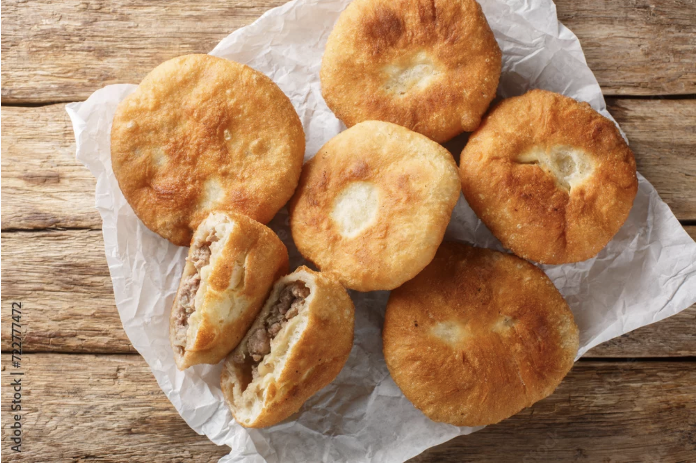

Belyash recipe
Back to main page

Photo of belyash
Description
**Belyash** (plural: belyashi) is a popular Russian street food consisting of deep-fried, individually sized pies
filled with **juicy minced meat and onions**. The dough is typically made from yeast, resulting in a light and
fluffy interior with a crispy exterior, while the filling usually combines beef and pork, seasoned with garlic,
black pepper, and salt. Belyashi are often round and may feature a small opening at the top, showcasing the
savory filling inside[1][2][4].
Although now considered a staple of Russian cuisine, belyash actually has roots in the Volga Tatar and Bashkir
culinary traditions, where similar pastries are known as *peremech*. Over time, belyashi became a beloved fast
food across Russia, sold fresh and hot on street corners and cherished for their rich flavor and satisfying
texture. The combination of soft dough and flavorful, juicy meat makes belyash a favorite comfort food for many
Russians.
Ingredients
- All-purpose flour
- Dry yeast
- Warm water
- Milk (optional, some recipes use it)
- Sugar
- Salt
- Butter or oil
- Sour cream (optional, for richer dough)
- Eggs
- Ground beef (or a mix of beef and pork)
- Onion
- Black pepper
- Cold water (for the filling)
- Oil for frying
Steps
- In a large bowl, dissolve the dry yeast and sugar in warm water (and milk, if using). Let it sit for about
10 minutes until foamy.
- Add salt, eggs, melted butter (or oil), and sour cream (if using) to the yeast mixture. Mix well.
- Gradually add flour, mixing until a soft, slightly sticky dough forms. Knead the dough for about 8–10
minutes until smooth and elastic.
- Cover the bowl with a towel or plastic wrap and let the dough rise in a warm place for 1–1.5 hours, or until
doubled in size.
- While the dough rises, prepare the filling: In a separate bowl, combine ground meat, finely chopped onion,
salt, black pepper, and a little cold water. Mix thoroughly until well combined and juicy.
- Punch down the risen dough and divide it into small balls, about the size of a golf ball.
- Flatten each dough ball into a small circle with your hands or a rolling pin.
- Place a spoonful of the meat filling in the center of each circle.
- Pinch the edges of the dough together over the filling, leaving a small opening at the top (optional, but
traditional).
- Heat oil in a deep skillet or pan over medium heat.
- Fry the belyashi in batches, seam side down first, until golden brown and cooked through, about 3–4 minutes
per side.
- Remove the belyashi and drain on paper towels. Serve warm.